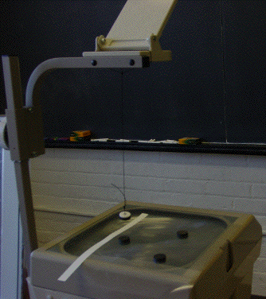

(1) Tape a piece of string to a magnet so the magnet hangs approximately level from the string. Attach the other end of the string to the overhead projector headr (tape or a suncatcher suction cup work well).
|  |
| String pendulum |
Return to Magnetic Basin Boundary.